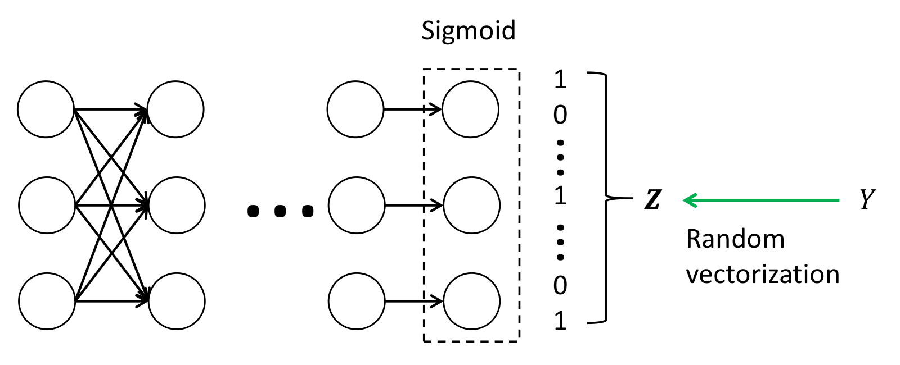

Abstract
Label differential privacy (DP) can effectively protect the sensitive label information in machine learning tasks with low utility loss and broad applicability. In this paper, we propose Vector Label-Privacy (VLP), a novel randomized response mechanism for label DP. Existing methods either infer the one-dimensional true label from one-dimensional randomized labels or estimate labels via posterior probabilities. In contrast, VLP maps one-dimensional labels to vectors and infers true labels from these vectors under DP guarantees. This new approach significantly reduces utility loss and broadens the application scope. By preserving geometric information in vectors and adding calibrated noise, VLP reduces misclassification probability and achieves the same utility under a smaller privacy budget than prior methods. For practical deployment, we further design LabelForge, a utility-enhancing module that can integrate with existing DP mechanisms and improve model utility without introducing additional privacy loss. We provide formal privacy and utility analyses. Extensive evaluations across ten image and text datasets show that VLP and LabelForge consistently outperform state-of-the-art label-DP methods in both utility and privacy-utility trade-offs.
Resources
Citation
@inproceedings{ZWLSZFSL25,
author = {Puning Zhao and Jiafei Wu and Zhe Liu and Li Shen and Zhikun Zhang and Rongfei Fan and Le Sun and Qingming Li},
title = {{Enhancing Learning with Label Differential Privacy by Vector Approximation}},
booktitle = {{ICLR}},
publisher = {OpenReview.net},
year = {2025},
}